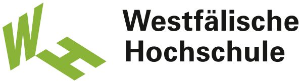

geo-audit-loop — ein selbstlernendes, agentisches GEO/SEO-Audit-System. Sprint 1 misst neutral die Zitations-Sichtbarkeit. Sprint 2 erklärt sie und leitet Fixes ab.
Der geschlossene Loop und die Lücke, die Sprint 2 füllt.
Ein neuer Port, zwei neue Agenten — hexagonal sauber.
Warum ranken die Top-Seiten, was fehlt den Flops.
Toleranz-Evals und die offline-deterministische Live-Demo.
Der Weg zu Sprint 3 und 4.
mypy --strict). Sprint 2 baut die Lern-Schicht darauf — gleiche Architektur, gleiche Disziplin.Audit-Tools sagen dass Inhalte nicht zitiert werden. Keines schließt den Kreis aus Diagnose → Muster-Lernen → begründetem Fix. Genau diese Lücke füllt der Lern-Loop.
EnginePort. Adapter: Mock (offline, deterministisch) & Claude (live, opt-in).Templates.AuditFindings.domain + ports — kein SDK im Agentencode.Deterministische, schema-valide Antworten. Gleicher Seed → gleicher PatternReport/AuditReport. Grundlage der toleranzbasierten Evals und der reproduzierbaren Demo — kein Netz, keine Kosten.
Anthropic Messages-API hinter demselben Port. Retry/Backoff, Budget-Cap, normalisierte Usage. Wird nur über GEO_LIVE_ENGINES=claude aktiviert.
Schema (FAQ/HowTo/Author), Wortzahl, Struktur der erfolgreich zitierten Seiten.
Verankert in den 10 Hebeln & der Citation-Pyramide — konkret, abstrahiert, belegt.
Wiederverwendbare Best-Practice-Muster mit Hebeln, Ebene, Kriterien, Konfidenz.
PyramidLevel-Enum im Code verankert — keine Magic Strings.extra="forbid". Ändert sich ein Vertrag, ziehen Producer, Consumer & Tests im selben Commit mit.Sampler/Crawler pinnen die exakte Top/Flop-Rangfolge bei Seed 42.
Pattern-Miner & GEO-Auditor: Anzahl in [min,max], Hebel-/Pyramide-Verankerung, Severity, monotone Priorisierung — statt exakter Stringgleichheit.
uv run python -m geo_audit_loop --offline --explain$ uv run python -m geo_audit_loop --domain it-sicherheit.de --offline --explain --top-n 3 === GEO-Sichtbarkeit: it-sicherheit.de === TOP 1. 71x /nis2-richtlinie 2. 42x /ransomware-schutz FLOP 1. 7x /security-awareness 2. 17x /passwort-manager-vergleich === WARUM ranken die Top-Seiten? 3 Muster (Pattern-Miner) === [t1] Extrahierbarer Antwortblock + FAQ-Schema (Konfidenz 0.82) Ebene: Extrahierbarkeit | Hebel: Antwortbloecke, Maschinenlesbare Struktur === WAS tun? 6 Findings (GEO-Auditor, priorisiert) === 1. [HIGH] /passwort-manager-vergleich Ebene: Extrahierbarkeit | Hebel: Maschinenlesbare Struktur Fix: Vergleichstabelle + Product/Review-Schema ergaenzen
anthropic war bereits gepinnt.Aus AuditFinding wird ein Patch (begründet via Template/Hebel) — Freigabe durch den Menschen, dann WordPress-/GitHub-Deploy.
Nach 7/14/28 Tagen erneut messen → EffectHypothesis in Chroma — der Loop verfeinert künftige Fixes selbst.
Sprint 2 ist das Scharnier: Es macht aus einer Mess-Maschine ein System, das versteht.